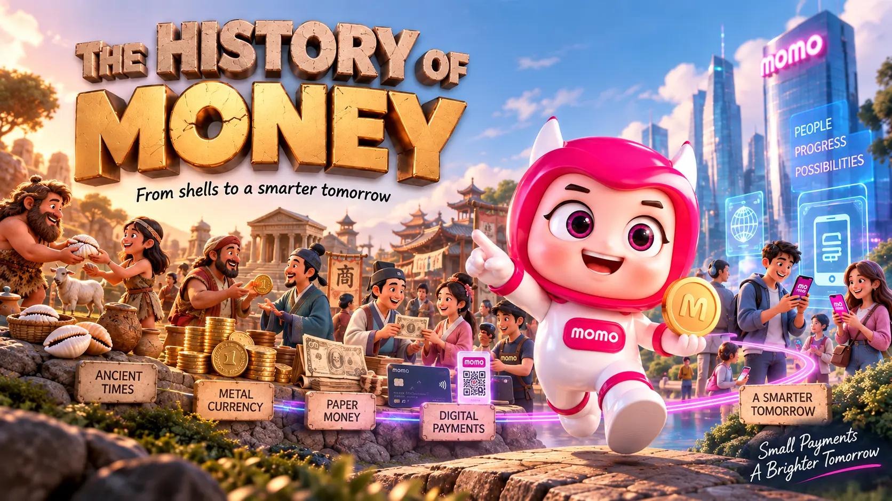
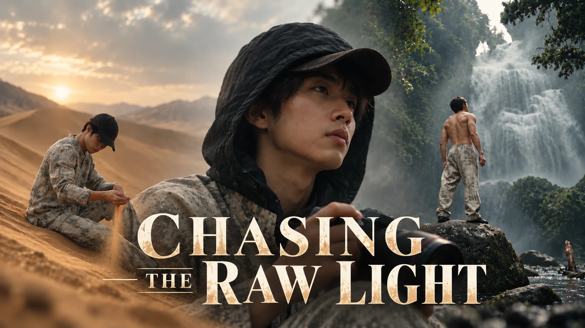
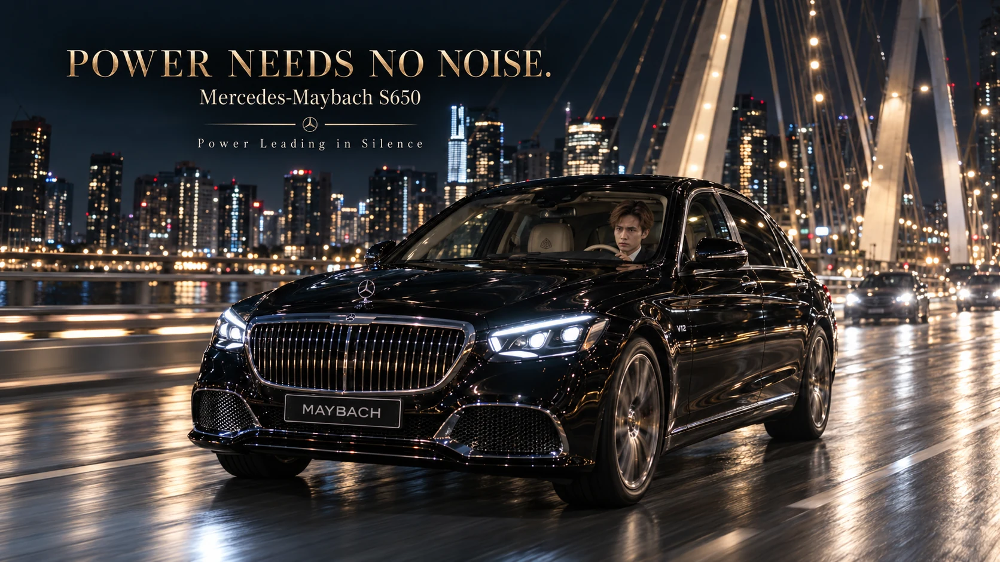

01 / 06CONFIDENTIAL CLIENT
01 / 06CONFIDENTIAL CLIENTSELECTED FRAMES
AI VIDEO ADS · LUXURY FASHION
Luxury Fashion
Paris becomes the stage for an ultra-real fashion film shaped around elegance, status and quiet confidence.
VIEW FILM + CASE STUDY ↗PROJECTS I HAVE DIRECTED
A focused selection of completed films. Scroll only when you are ready to enter the project archive.
06 PROJECTS · 04 CREATIVE DIRECTIONS01 / 06CONFIDENTIAL CLIENTParis becomes the stage for an ultra-real fashion film shaped around elegance, status and quiet confidence.
VIEW FILM + CASE STUDY ↗
02 / 06CLIENT WORKA time-travel story that turns the evolution of human exchange into an entertaining branded adventure.
VIEW FILM + CASE STUDY ↗ 03 / 06CLIENT PROJECT
03 / 06CLIENT PROJECTA frontier-inspired fashion film for Kakadu, shaped by open country, quiet confidence and the freedom to keep moving.
VIEW FILM + CASE STUDY ↗
04 / 06PERSONAL PROJECTThirty seconds of everyday life, restless curiosity and open horizons, seen through a cinematic lens.
VIEW FILM + CASE STUDY ↗A cinematic short about enjoying life on your own terms: easy moments, open air and a personality that stays unmistakably yours.
VIEW FILM + CASE STUDY ↗
06 / 06PERSONAL PROJECTA businessman, a Mercedes-Maybach S650 and the city after dark. A quiet drive home becomes a moment to enjoy what the effort has earned.
EXPLORE THE PROJECTA compact process keeps experimentation focused and every decision visible.
Audience, objective and the thought worth remembering.
Visual rules, rhythm, references and a coherent world.
Generate, select and direct material with intent.
Edit, sound, colour and finish until the feeling is clear.